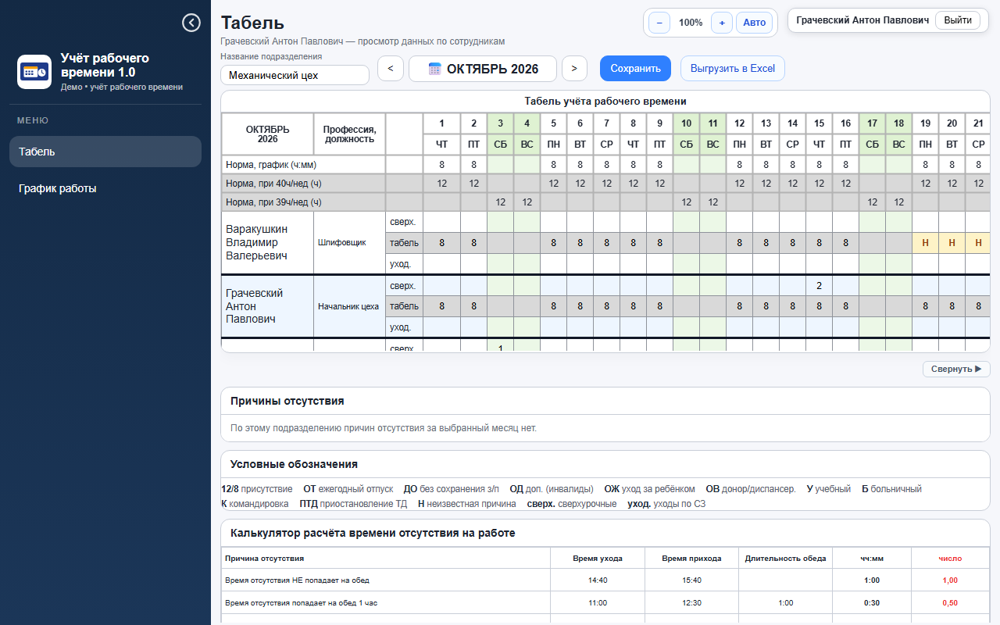
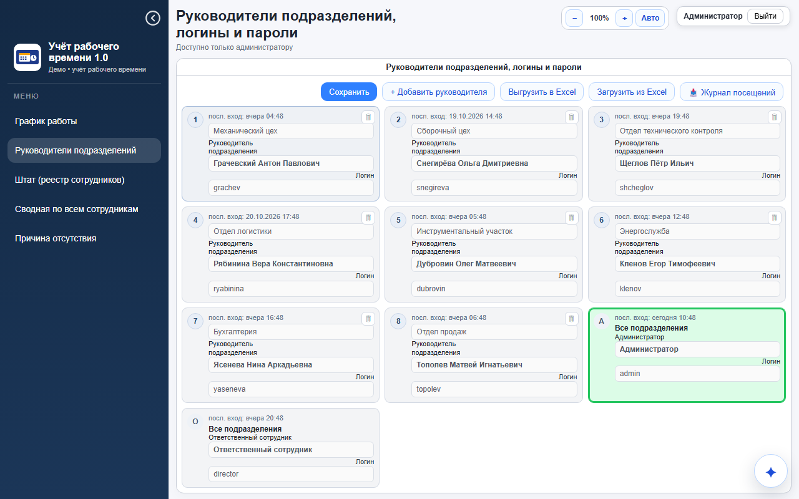
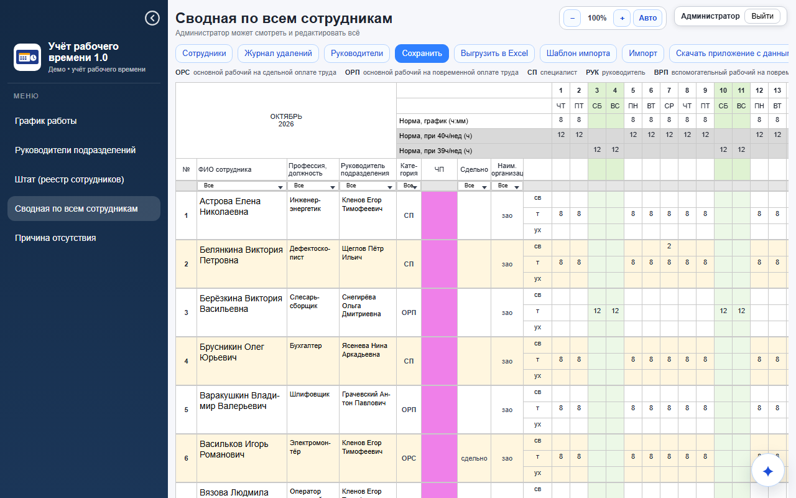
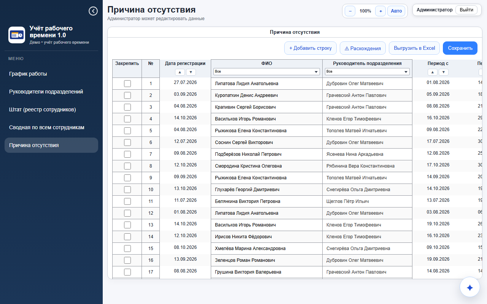

Веб-приложение для производства: руководители цехов и отделов ведут табель своего подразделения, отдел кадров видит все подразделения, реестр сотрудников, причины отсутствия и сводную с выгрузкой в Excel.
Пароль у всех одинаковый: demo. На экране входа роли можно выбрать одной кнопкой.
admin · пароль demodirector · пароль demograchev · пароль demoДругие руководители (пароль тот же): snegireva сборочный цех · shcheglov ОТК · ryabinina логистика · dubrovin инструментальный участок · klenov энергослужба · yaseneva бухгалтерия · topolev отдел продаж.




Это тот же интерфейс, что и в рабочей версии. Вместо сервера и базы данных в страницу встроена заглушка: при первом открытии она создаёт вымышленных сотрудников и заполненные табели за последние месяцы и хранит их в браузере смотрящего. Ничего никуда не отправляется, каждый смотрящий видит свою копию.
В рабочей версии: клиент на чистом JavaScript без фреймворков, сервер PocketBase (SQLite) с серверными проверками записи, nginx, автоматические проверки в браузере.